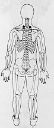
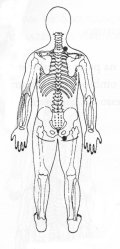

Travas de Segurança da Energia 11 - Segunda Profundidade
|
 |
TSE 11 ¬ Colocar as mãos na parte superior das costas abaixo da junção do pescoço com os ombros TSE 11. ou
M.e. sobre na parte superior das costas abaixo da junção do pescoço com o ombro direito TSE 11. ®
M.d. sobre a nádega direita TSE 25. ®
|

|
Notas:1 - M.d. = mão direita M.e. = mão esquerda.
2 - O texto sublinhado indica que pode ser feito usando alternadamente o lado
direito (mão direita) e depois o lado esquerdo (mão esquerda).
3 - Tocar a área indicada, com a ponta dos dedos da mão, durante
alguns minutos ou até sentir uma pulsação rítmica.
Não precisamos nos preocupar em demasia com a precisão da área
indicada, pois cada trava de segurança da energia tem uma abragência
de uns sete centímetros em torno de si.